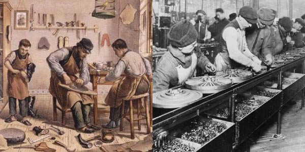

Primeira revolução industrial
A primeira revolução industrial teve início na inglaterra, no século XVIII, foi chamada também de Revolução do carvão e do ferro. Essa revolução marcou o fim da era artesanal e o início da era industrial

-
Possui 4 fases
- Mecânização da indústria e da agricultura: invenção da máquina de fiar, do tear hidráulico e mecânico e do descaroçador de algodão, que substituíram o trabalho do homem e a formça motriz muscular do homem, do animal ou da roda d'água
1° fase
-
- Aplicação da força motriz à indústria : invenção da máquina à vapor. Com a aplicação do vaporàs máquinas, iniciam-se grandes transformações nas oficinas(que se convertem em fábricas), nos transportes, nas comunicaçlões e na agricultura.
2° fase
-
- Desenvolvimento do sistema febril: surgem novas indústrias e ocorre a migração das áreas agrícolas para as proximidades das fábricas (urbanização)
3° fase
-
- Aceleração dos transportes por meio do navio e da locomotiva a vapor e primeira estrada de ferro. Aceleramento da comunicação, com a invenção do telégrafo e do telefone
4° fase